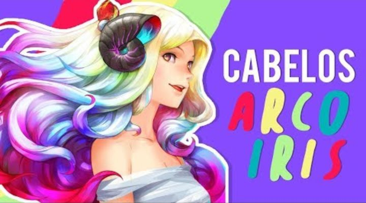

Vermelho Vibrante
Cabelos Arco-Íris
Eu vendi minha alma
Em troca disso eu pedi uns 3 desejos
E um dos 3 desejos foi não sentir receio
De sair a noite e tornar dela um pesadelo
De ser um cachorro negro e ver isso no espelho
Tenha cuidado até na sombra que te segue
Perseguidor noturno, como Ed, Ted, Jeffrey, Edmound
Garry, Jack, Andrei, Patrick Nilsen
Isabel, Billy the Kid, John Wayne Gacy
Pode gritar
Sei que ninguém vai te escutar
Pode gritar
Sei que ninguém vai te escutar

Teus cabelos arco-íris
Me travou e me enlouqueceu
Mais perfeita que as canções de Beethoven, Mozart, Orfeu
Deusa dos meus sonhos, versão feminina de Morfeu
Labirinto de Dedálo que meu coração se perdeu
Perdeu
Me perdi no abismo e voltei
Teu amor diminui minha vontade de querer morrer